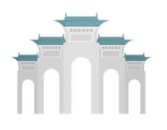

今天想要去哪裡?
特色：
自然美景、神秘感、文化歷史
詳細介紹：
自然美景：
蓮潭池被茂密的樹林所環繞，湖泊平靜如鏡，呈現出迷人的水景景觀。
湖中散布著許多蓮花，特別是在夏季時，湖面上盛開著綻放的蓮花，給人一種優雅和寧靜的感覺。
這裡的自然環境相當清幽，適合散步和放鬆心情。
神秘感：
蓮潭池散發著一種神秘的氛圍，這源於池塘的傳說和歷史背景。
人們相傳，曾經有一位魔術師在這個地方居住，他以其才華和神秘的個性為這個地方增添了神秘感。
這段傳說賦予了蓮潭池獨特的魅力，吸引著遊客們來探索這個神秘的地方。
文化歷史：
蓮潭池擁有豐富的文化歷史背景。
在古代，這個地方是一個重要的水源地，供應當地居民的用水需求。
同時，它也是一個重要的休憩場所，人們在這裡遊玩、賞景和聚會。
這個地方曾經承載著當地人民的生活和活動，代表著他們的歷史和文化傳統。
旅遊活動：
蓮潭池成為了一個受到遊客喜愛的旅遊目的地。
遊客們可以在這裡漫步於湖畔，欣賞湖面上綻放的蓮花和周圍的自然景觀。
此外，還可以租借船隻，在湖上划船，享受寧靜和放鬆的時刻。
蓮潭池附近還有一些咖啡廳和小吃攤，供應當地美食和飲品，讓遊客在享受自然之餘也能品味當地的美食文化。